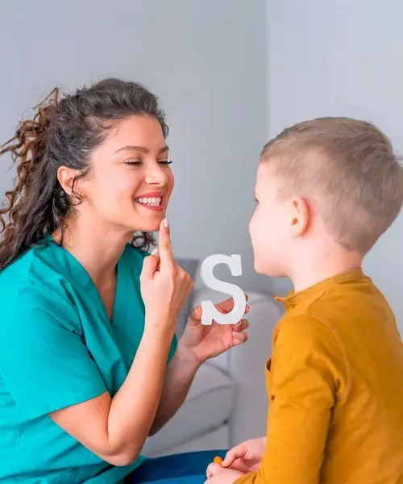
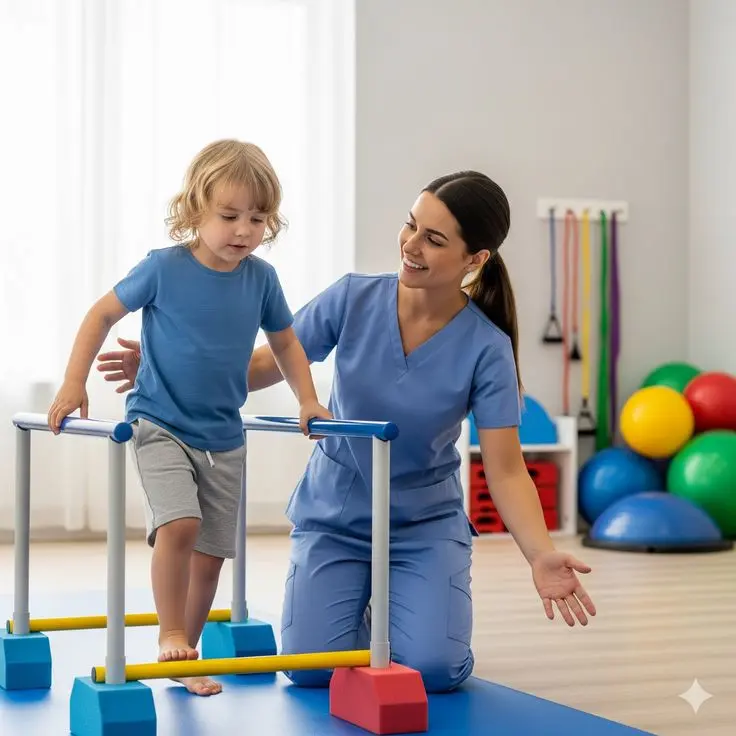
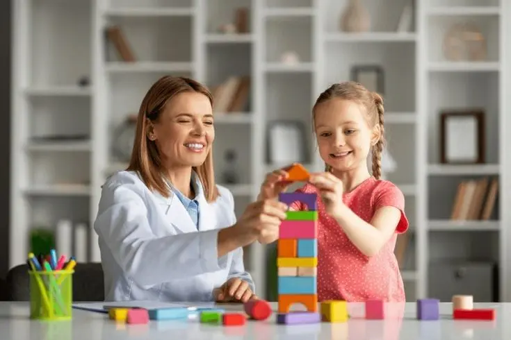
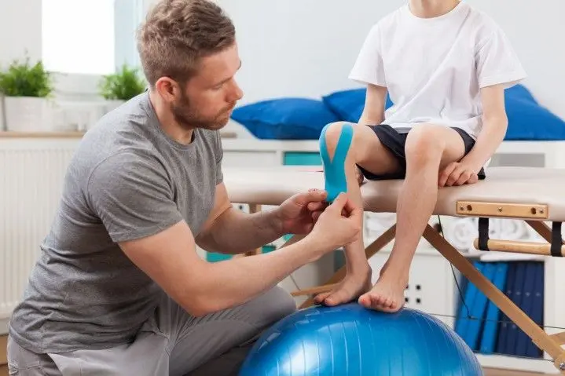

Centro de terapia infantil en Ecuador | Evaluación y tratamiento especializado
Un espacio seguro diseñado para potenciar el desarrollo emocional, cognitivo y conductual de tus hijos, brindando acompañamiento integral a toda la familia.

Atención Personalizada
Planes de intervención únicos adaptados a las necesidades reales de cada niño.
Profesionales Especializados
Equipo multidisciplinario certificado en las técnicas terapéuticas más avanzadas.
Ambiente Seguro
Instalaciones diseñadas para transmitir paz, confianza y estimular el aprendizaje.
Resultados Medibles
Seguimiento continuo y reportes objetivos sobre el progreso de tu pequeño.
Nuestros Servicios Integrales
Evaluación, diagnóstico y tratamiento bajo un enfoque empático y científico.
Evaluaciones y Diagnósticos Clínicos
Evaluación Psicológica & Psicopedagógica
Medición profunda de capacidades cognitivas, emocionales y de aprendizaje.
Trastornos del Aprendizaje
Diagnóstico preciso de dislexia, discalculia, disgrafía y más.
Diagnóstico TDAH
Detección de Trastorno por Déficit de Atención e Hiperactividad.
Problemas Conductuales
Análisis de dificultades en la conducta, límites y adaptación social.
Terapias Especializadas

Terapia Psicológica
Abordaje de la gestión emocional, ansiedad, depresión infantil, miedos y autoestima.
- Fomenta la inteligencia emocional
- Niños desde los 4 años y adolescentes

Terapia Psicopedagógica
Intervención en dificultades de lectura, escritura, cálculo y técnicas de estudio.
- Mejora el rendimiento escolar
- Ideal para niños en etapa escolar

Terapia de Lenguaje
Tratamiento de dislalias, tartamudez, retraso en el lenguaje y problemas de comunicación.
- Comunicación clara y fluida
- Niños con dificultades expresivas

Terapia Ocupacional
Integración sensorial, motricidad fina/gruesa y autonomía en actividades diarias.
- Promueve la independencia
- Problemas sensoriales y motores

Terapia Lúdica
Uso del juego como herramienta para expresar emociones, resolver conflictos y sanar traumas.
- Expresión natural y sin presión
- Niños de primera infancia

Terapia Física
Rehabilitación y estimulación del desarrollo neuromuscular y postura.
- Fortalecimiento muscular y equilibrio
- Retrasos motores o lesiones
Talleres y Acompañamiento Continuo

Más que una clínica, somos un espacio seguro
En REDIP entendemos que cada niño tiene su propio ritmo y forma de ver el mundo. Nacimos con la vocación de abrazar la neurodiversidad y apoyar a las familias ecuatorianas con herramientas científicas y un trato profundamente humano.
Nuestro equipo multidisciplinario trabaja en conjunto para que las piezas encajen, convirtiendo los desafíos de hoy en las fortalezas del mañana.
Conoce nuestras instalacionesFamilias que confían en REDIP
Historias reales de avance, amor y neurodesarrollo.
"Mi hijo tenía problemas severos de lenguaje. Desde que iniciamos las terapias en REDIP, su progreso ha sido increíble. Las terapeutas son un amor, muy pacientes."
"El diagnóstico de TDAH nos asustó al principio, pero la escuela para padres y la intervención psicopedagógica nos dieron las herramientas exactas que necesitábamos en casa."
"Excelente centro. Buscaba estimulación temprana y encontré verdaderos profesionales. Las instalaciones en La Atarazana son hermosas y muy seguras para los bebés."
Preguntas Frecuentes
Resolvemos tus dudas sobre nuestros procesos terapéuticos.
Atendemos desde la etapa de estimulación temprana (meses de nacidos) hasta la adolescencia. Cada terapia se adapta a la etapa de desarrollo evolutivo del paciente.
Las sesiones estándar duran 45 minutos. La frecuencia (1 a 3 veces por semana) se determina tras la evaluación inicial, dependiendo de las necesidades específicas del diagnóstico.
Si notas dificultades constantes en la lectura, escritura, atención dispersa, bajo rendimiento escolar persistente, o si el colegio sugiere una revisión por posibles problemas de aprendizaje o TDAH.
Sí, entregamos informes completos, diagnósticos clínicos y recomendaciones pedagógicas que tienen total validez para el departamento del DECE en escuelas y colegios del Ecuador.
Absolutamente. Creemos que el éxito terapéutico involucra a la familia. Ofrecemos psicoeducación, escuela para padres y reuniones periódicas de retroalimentación.
El mejor momento para apoyar su desarrollo es hoy.
No postergues su bienestar. Agenda una evaluación inicial y comencemos a construir un futuro brillante juntos.
Agendar Evaluación por WhatsApp